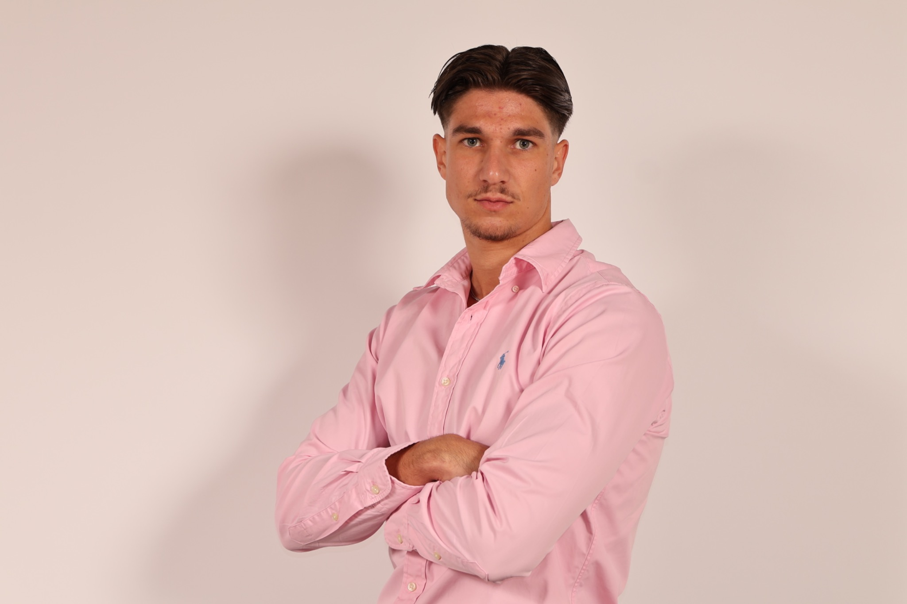
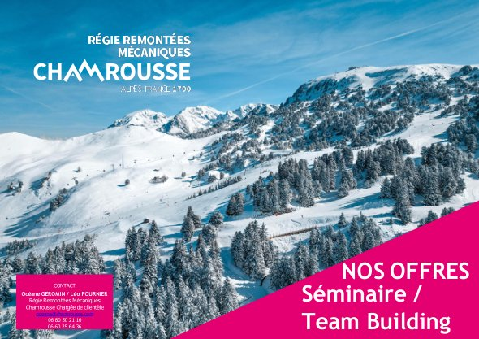
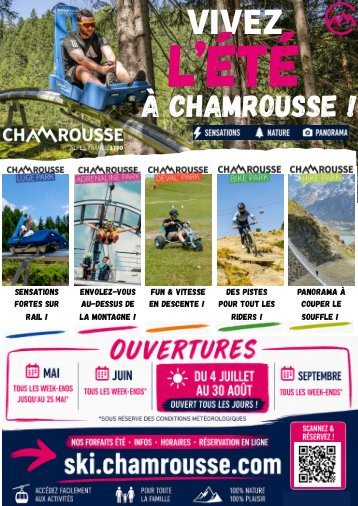
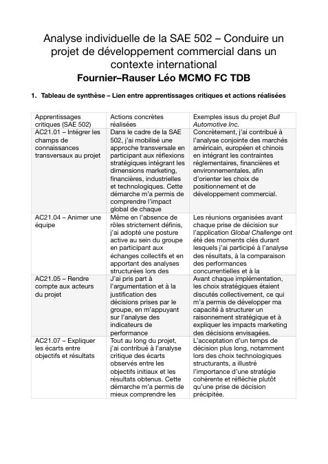
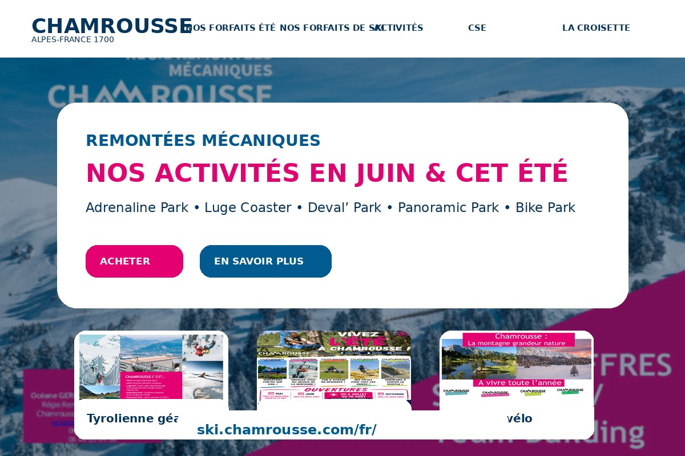
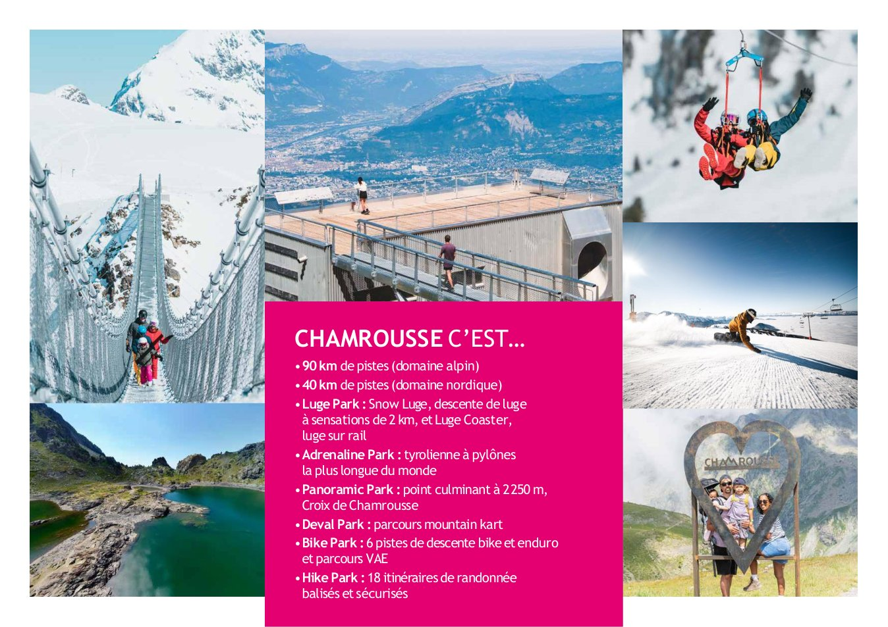
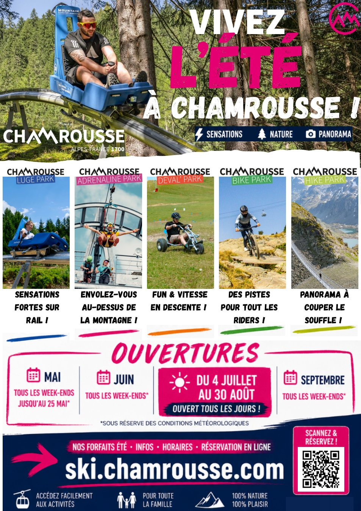

BUT3 GACO — Parcours MCMO
Léo
Léo
Fournier
Alternant à la Régie des Remontées Mécaniques de Chamrousse
Développer l’attractivité commerciale et touristique par la relation client, la communication et le marketing opérationnel.
Mon profil
Un parcours orienté commerce, sport et tourisme
🎓
Formation
BUT GACO, parcours Management Commercial & Marketing Omnicanal, en troisième année à l’IUT Savoie Mont Blanc.
💼
Alternance
Service des ventes de Chamrousse : prospection, relation client, devis, relances, satisfaction et supports commerciaux.
🚀
Objectif
Poursuivre en Master dans le marketing, le business development, le sport ou le tourisme, en alternance.
⛷
Univers
Sport outdoor, ski, rugby, événementiel, communication digitale et développement commercial.
Compétence 1 — UE3 Niveau 3
Participer au développement commercial de l’organisation
AC35.03MCMO — Prospecter et qualifier un fichier client, dans un objectif de déploiement commercial, de démarche qualité ou de programme de fidélisation.
Projet Bull Automotive Inc.
- Analyse de marchés internationaux
- Segmentation et adaptation du mix marketing
- Comparaison des stratégies concurrentielles
- Décisions commerciales argumentées
Alternance à Chamrousse
- Prospection groupes, CSE, scolaires, agences
- Qualification des demandes et besoins clients
- Devis, relances et suivi commercial
- CRM, questionnaire satisfaction et fidélisation
Ce que j’ai appris : qualifier un besoin client, exploiter des données commerciales et construire une relation de confiance.
Compétence 2 — UE1 Niveau 3
Participer à la communication de l’organisation
AC31.05 — Définir et élaborer les éléments de communication du projet.
Création de supports de communication
- Définition d’une identité visuelle
- Création de supports sur Canva et PowerPoint
- Adaptation du message à la cible
- Présentation claire et professionnelle
Communication à Chamrousse
- Support séminaire / team building
- Flyer été 2026
- Valorisation de l’offre quatre saisons
- Contribution à l’image de la station
Ce que j’ai appris : créer un message cohérent, attractif et adapté aux objectifs commerciaux.
Mes preuves
Documents cliquables et traces professionnelles
 CRM prospectionFichier client, qualification, emails et suivi commercial
CRM prospectionFichier client, qualification, emails et suivi commercial

Offres séminairesSupport commercial Chamrousse / team building
Flyer été 2026Support visuel pour l’offre quatre saisons
SAÉ 502Analyse individuelle du projet Bull Automotive Inc.
CVParcours, expériences et compétences
LinkedInProfil professionnel et réseau
Site Ski ChamrousseSite officiel de la Régie des Remontées Mécaniques
Rapport d’alternanceChamrousse, ventes et stratégie quatre saisons
Itinéraires randonnéeLien externe : randonnée et montagne à Chamrousse
Station ChamrousseLien externe : présentation touristique de la station
Domaine ski alpinLien externe : site officiel Chamrousse
Univers Chamrousse
Une station visuelle, quatre saisons et expérientielle



Mon évolution
Avant, maintenant, demain
Avant
Découverte du monde professionnel, besoin de gagner en confiance et en méthode commerciale.
Maintenant
Autonome dans la relation client, capable d’analyser, proposer et contribuer à la stratégie commerciale et à la communication.
Demain
Approfondir mes compétences en marketing stratégique, digital et management pour piloter des projets plus ambitieux.
Conclusion
Ce portfolio reflète ma montée en compétences à travers des projets concrets en formation et en entreprise. Passionné par la montagne, le sport et le contact humain, je souhaite continuer à développer des stratégies commerciales et de communication performantes, responsables et durables.
Retour en haut ↑